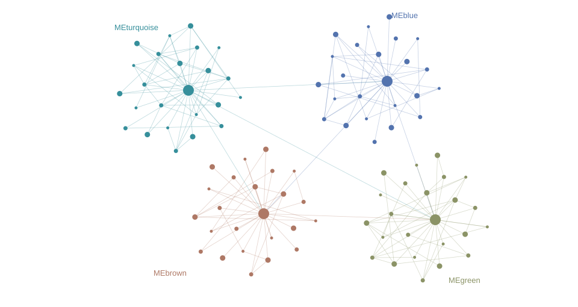

首页设计预览 v2 · 独立静态稿，尚未接入 app。报告和图表使用模拟数据。
Expression. Modules. Discovery.
在万千基因之间，
看见共同的规律。
从表达矩阵出发，寻找协同变化的基因模块，连接性状与功能线索。让每一步分析都能被看见、被理解、被记录。
RUST ENGINE / LOCAL ANALYSIS / STEP BY STEP

CO-EXPRESSION AT A GLANCEILLUSTRATIVE NETWORK / 01
The analysis journey
有顺序，
也有依据。
六个分析阶段，一份完整报告。
每一步都留下可以回看的记录。